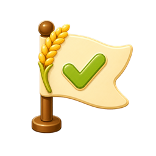
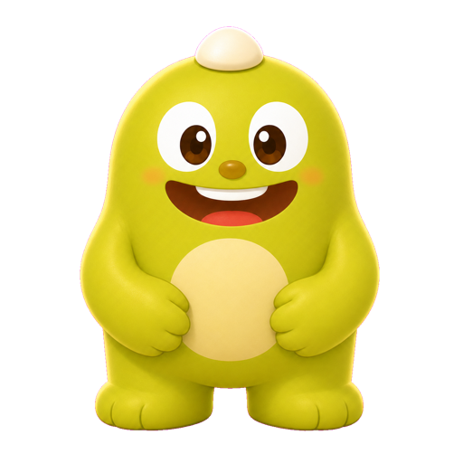
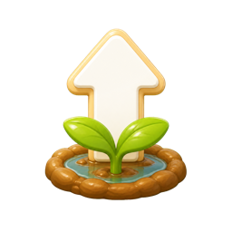
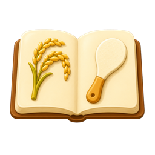

최종 목표 작은 쌀 축제 준비 중누적 소비량 30kg, 인기도 100, 레시피 5종 해금

 0g
15g/s
+5g
0g
15g/s
+5g


최종 목표 작은 쌀 축제 준비 중누적 소비량 30kg, 인기도 100, 레시피 5종 해금
 활성 효과
효과 없음
활성 효과
효과 없음
레시피를 소비하면 수확 효율이 잠시 또는 영구적으로 좋아집니다.

업그레이드 생산과 소비 강화 미션
미션
레시피 0/5 해금통계